05 Special Diodes
Zener Diode
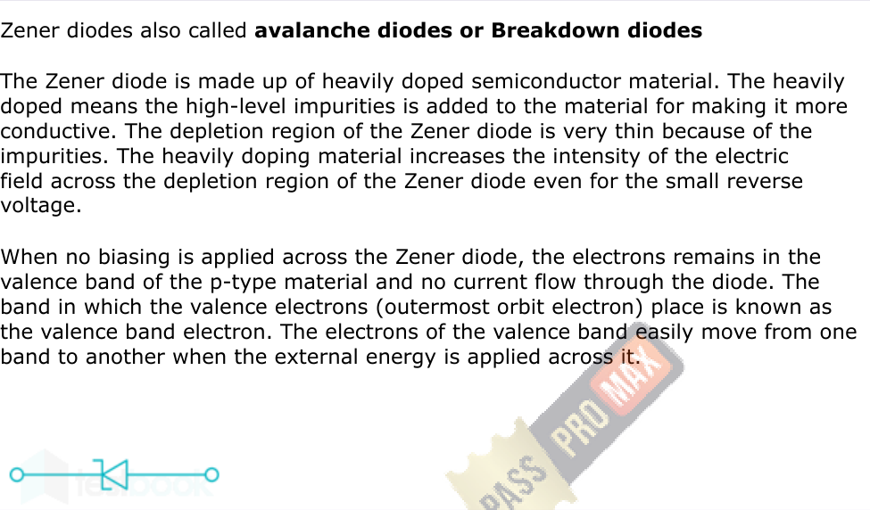
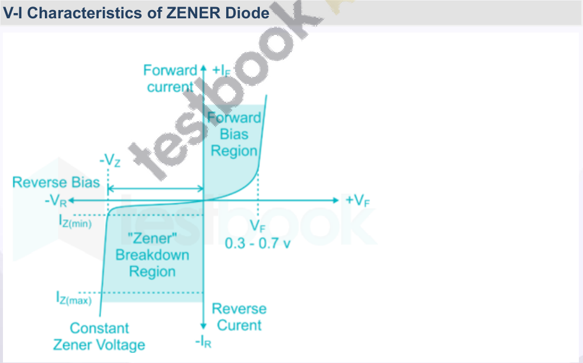
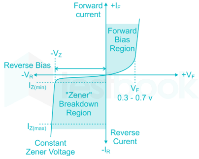
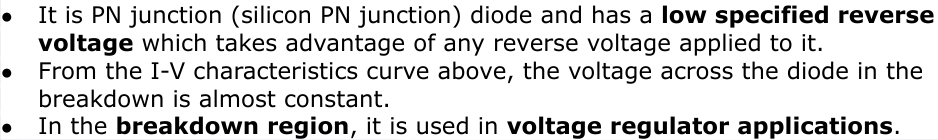
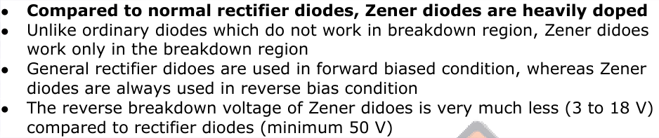
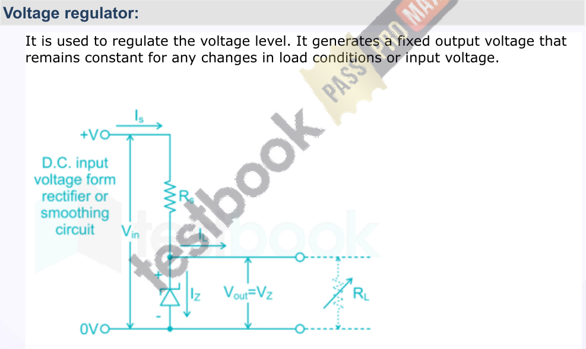
Where V z = Zener voltage V in = Input voltage R L = Load resistance R S = Source resistance
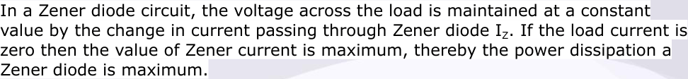
P z max = V z × I z max
P z min = Minimum power dissipation P z min = V z × I z min Pin Diode
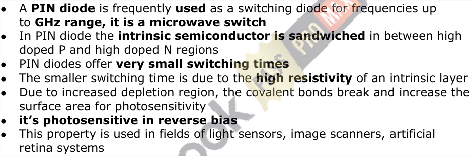
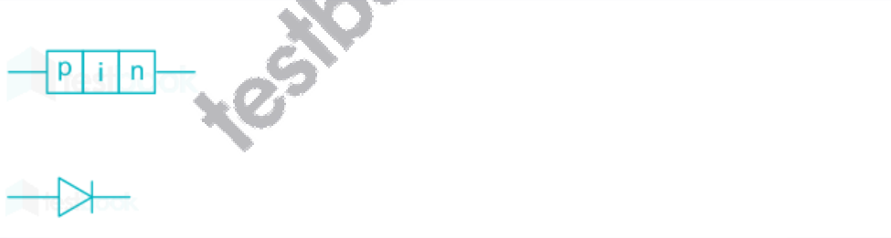
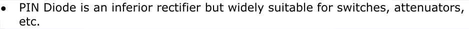
PIN diode with different biasing:
Forward Bias:
Reverse Bias:
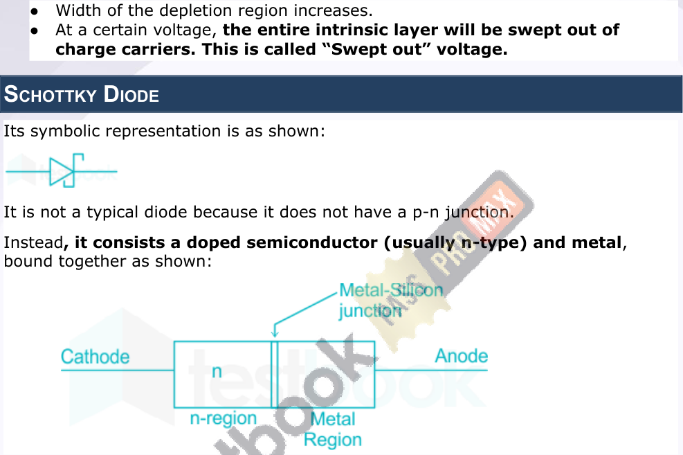
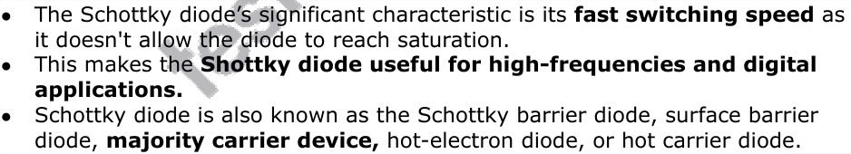
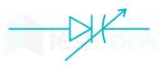
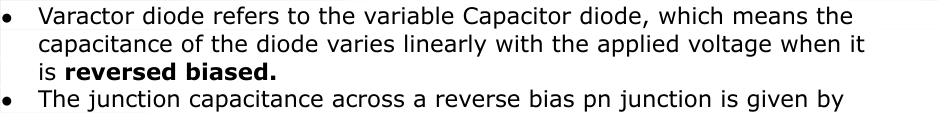
𝐴 ϵ 𝐶= 𝑊
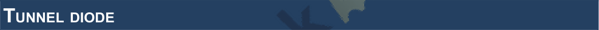
It is a highly doped PN Junction diode, used for low voltage high-frequency switching applications. It works on the tunneling principle. When compared to a normal p-n junction diode, tunnel diode has a narrow depletion width. In normal forward-biased operation, it exhibits the “Negative resistance region” as shown:
The negative differential resistance in their operation, allows them to be used as oscillators, amplifiers, and switching circuits. Their low capacitance allows them to function at microwave frequencies. Tunnel diodes are not good rectifiers, as they have relatively high leakage current when reverse biased.
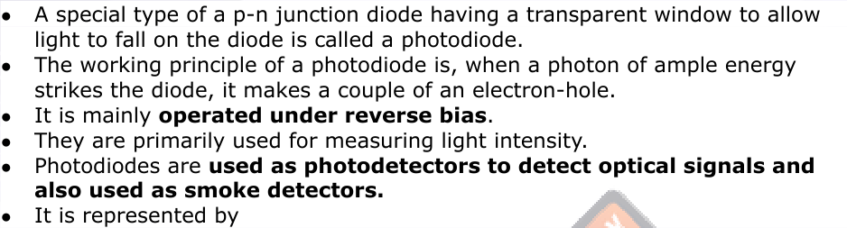
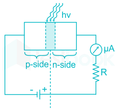
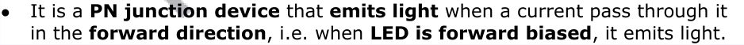
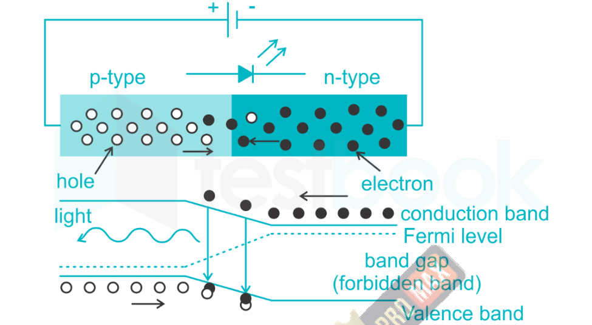
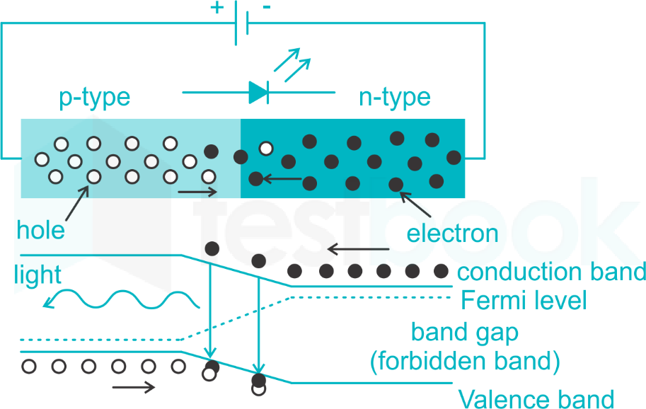
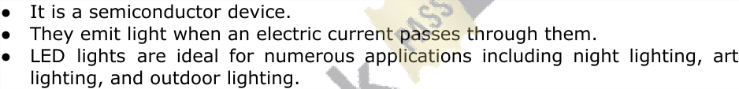
Electroluminescence:
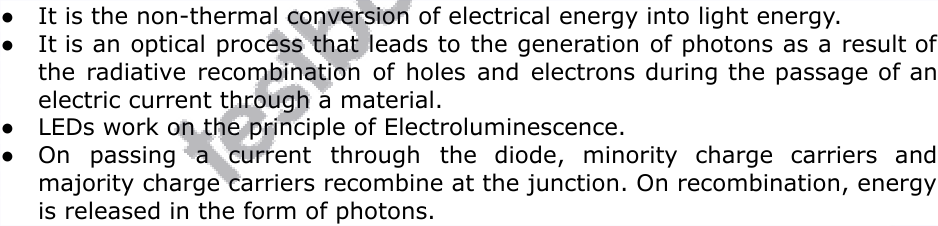
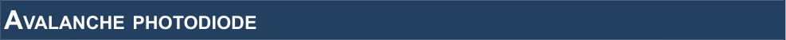